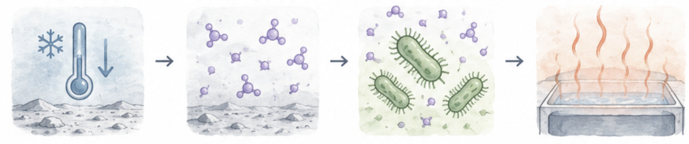

<!DOCTYPE html>
<html>
<head>
  <meta charset="UTF-8">
  <title>Threa-4 Research Study</title>

  <!-- jsPsych core -->
  <script src="https://unpkg.com/jspsych@7.3.4"></script>
  <link href="https://unpkg.com/jspsych@7.3.4/css/jspsych.css" rel="stylesheet" type="text/css" />

  <!-- jsPsych plugins -->
  <script src="https://unpkg.com/@jspsych/plugin-html-button-response@1.1.3"></script>
  <script src="https://unpkg.com/@jspsych/plugin-survey-likert@1.1.3"></script>
  <script src="https://unpkg.com/@jspsych/plugin-survey-text@1.1.3"></script>
  <script src="https://unpkg.com/@jspsych/plugin-survey-html-form@1.0.3"></script>

  <!-- DataPipe plugin for data collection -->
  <script src="https://unpkg.com/@jspsych-contrib/plugin-pipe"></script>

  <style>
    body {
      background-color: #ffffff;
    }

    /* Main content container - 640px max width, centered */
    .study-info {
      max-width: 640px;
      margin: 0 auto;
      text-align: left;
      line-height: 1.6;
      font-size: 16px;
    }

    .study-info h2 {
      color: #2c3e50;
      margin-top: 30px;
      margin-bottom: 15px;
      font-size: 20px;
      font-weight: 600;
    }

    .study-info p {
      margin-bottom: 15px;
    }

    /* Task line - bold, standalone, with spacing */
    .task-line {
      font-weight: bold;
      margin: 24px 0;
      padding: 12px 0;
      border-top: 1px solid #e0e0e0;
      border-bottom: 1px solid #e0e0e0;
    }

    /* Briefing card - callout box style */
    .briefing-card {
      background-color: #f8f9fa;
      border: 1px solid #dee2e6;
      border-radius: 8px;
      padding: 20px;
      margin: 24px 0;
    }

    .briefing-card h2 {
      margin-top: 0;
      color: #2c3e50;
      font-size: 18px;
    }

    /* Highlight for re-reading sections */
    .highlight-reread {
      background-color: #fff3cd;
      border-left: 4px solid #ffc107;
      padding: 15px;
      margin: 20px 0;
      border-radius: 4px;
    }

    /* Question sections */
    .question-section {
      max-width: 640px;
      margin: 40px auto 0;
      padding-top: 30px;
      border-top: 2px solid #e0e0e0;
    }

    .question-item {
      margin-bottom: 30px;
    }

    .question-item label {
      display: block;
      font-weight: bold;
      margin-bottom: 10px;
      font-size: 16px;
    }

    /* Comprehension check questions */
    .comprehension-question {
      margin-bottom: 25px;
      padding: 15px;
      background-color: #f8f9fa;
      border-radius: 6px;
    }

    .comprehension-question label {
      font-weight: 600;
      margin-bottom: 12px;
      display: block;
    }

    .comprehension-question input[type="radio"] {
      margin-right: 8px;
    }

    .comprehension-option {
      margin: 8px 0;
      padding: 8px;
    }

    .comprehension-feedback {
      margin-top: 12px;
      padding: 10px;
      border-radius: 4px;
      font-weight: 500;
    }

    .comprehension-feedback.incorrect {
      background-color: #fff3cd;
      border-left: 4px solid #ffc107;
    }

    /* Likert scale */
    .likert-scale {
      display: flex;
      justify-content: space-between;
      margin-bottom: 10px;
    }

    .likert-option {
      display: flex;
      flex-direction: column;
      align-items: center;
      flex: 1;
    }

    .likert-option input[type="radio"] {
      margin-bottom: 5px;
    }

    .likert-label {
      font-size: 12px;
      text-align: center;
    }

    /* Text areas */
    textarea {
      width: 100%;
      padding: 10px;
      margin-top: 10px;
      font-family: Arial, sans-serif;
      font-size: 14px;
      border: 1px solid #ccc;
      border-radius: 4px;
      line-height: 1.5;
    }

    /* Buttons */
    .submit-container {
      text-align: center;
      margin-top: 40px;
    }

    .submit-btn, .jspsych-btn {
      background-color: #3498db;
      color: white;
      padding: 12px 30px;
      font-size: 16px;
      border: none;
      border-radius: 5px;
      cursor: pointer;
    }

    .submit-btn:hover, .jspsych-btn:hover {
      background-color: #2980b9;
    }

    /* Reading screen specific */
    .reading-screen {
      max-width: 640px;
      margin: 0 auto;
      padding: 40px 20px;
    }

    .continue-button-container {
      text-align: center;
      margin-top: 40px;
    }

    /* jsPsych survey text plugin styling */
    .jspsych-survey-text {
      max-width: 640px;
      margin: 0 auto;
      line-height: 1.6;
    }

    .jspsych-survey-text-question {
      margin-bottom: 30px;
    }

    .jspsych-survey-text textarea {
      width: 100%;
      max-width: 640px;
    }
  </style>
</head>
<body></body>

<script>
  // Initialize jsPsych
  const jsPsych = initJsPsych({
    on_finish: function() {
      // Display completion message
      document.body.innerHTML = `
        <div style="max-width: 800px; margin: 100px auto; text-align: center;">
          <h1>Thank you for participating!</h1>
          <p>Your responses have been saved.</p>
          <p>You may close this window now.</p>
        </div>
      `;
    }
  });

  // Generate unique participant ID using jsPsych's randomization
  const subject_id = jsPsych.randomization.randomID(10);
  const filename = `${subject_id}.csv`;

  // ===== PILOT CONDITION ASSIGNMENT (N=8 Cycle) =====
  // Fixed sequence ensuring 2 participants per condition in each cycle of 8
  // This guarantees balanced conditions for pilot data collection
  const conditionSequence = [
    'simple_relevant',      // Position 0
    'simple_relevant',      // Position 1
    'complex_relevant',     // Position 2
    'complex_relevant',     // Position 3
    'simple_irrelevant',    // Position 4
    'simple_irrelevant',    // Position 5
    'complex_irrelevant',   // Position 6
    'complex_irrelevant'    // Position 7
  ];

  // Randomly assign participant to one of the 8 positions
  const randomPosition = Math.floor(Math.random() * 8);
  const condition = conditionSequence[randomPosition];

  // Parse condition variables
  const complexity = condition.startsWith('simple') ? 'simple' : 'complex';
  const relevance = condition.endsWith('irrelevant') ? 'irrelevant' : 'relevant';

  // Add condition info to all data collected
  jsPsych.data.addProperties({
    subject_id: subject_id,
    condition: condition,
    complexity: complexity,
    relevance: relevance,
    sequence_position: randomPosition  // For pilot analysis: which position in the 8-cycle
  });

  // ===== CONDITION-SPECIFIC TEXT CONTENT =====

  // Define decision context variations based on relevance condition
  const decisionContext = {
    relevant: `
      <p><strong>The plan:</strong> Give each field outpost its own compact heating unit. Whether an outpost stays warm depends on its unit's heat output on each cold day, so heat has to arrive in time on the coldest days.</p>
    `,
    irrelevant: `
      <p><strong>The plan:</strong> One central reservoir with a large thermal buffer. It absorbs heat as it's generated and releases it steadily into the residence, so what matters is total output over weeks, not output on any given day.</p>
    `
  };

  // Define text variations based on complexity condition
  const complexityText = {
    simple: `
      <h2>Threa-4 biology — current understanding:</h2>
      <p>Threa-4 is a barren moon of only a few elements, and the life that evolved there is physiologically simple. Its physiology depends on a small number of environmental factors, all directly measurable, that don't interact in complicated ways — identical conditions reliably produce nearly identical responses.</p>
    `,
    complex: `
      <h2>Threa-4 biology — current understanding:</h2>
      <p>Threa-4 is rich in elements rare on Earth, and the life that evolved there is biologically intricate. Its physiology depends on many factors — several not directly measurable, only inferable from indirect signals — that interact in complicated ways, so identical conditions can produce substantially different responses.</p>
    `
  };

  // ===== COMPREHENSION CHECK TRACKING =====
  const comprehensionAttempts = {
    q1_proposal: { attempts: 0, firstCorrect: null, retriggered: false },
    q2_briefing: { attempts: 0, firstCorrect: null, retriggered: false },
    q3_task: { attempts: 0, firstCorrect: null, retriggered: false },
    q4_observation: { attempts: 0, firstCorrect: null, retriggered: false }
  };

  // Timeline array to hold all trials
  let timeline = [];

  // ===== WELCOME / INSTRUCTIONS PAGE =====
  const welcomePage = {
    type: jsPsychHtmlButtonResponse,
    stimulus: `
      <div class="reading-screen">
        <h1 style="text-align: center; margin-bottom: 30px; font-size: 2rem;">Welcome to Our Study</h1>

        <div style="line-height: 1.8; font-size: 16px; text-align: left;">
          <p>Thank you for participating in this research study!</p>

          <h2 style="margin-top: 30px; margin-bottom: 15px; font-size: 1.3rem;">What you'll do:</h2>
          <p>In this study, you will:</p>
          <ul style="margin-left: 20px; margin-bottom: 20px; line-height: 2;">
            <li>Read a short scenario about a scientific research project</li>
            <li>Answer some questions about what you read</li>
            <li>Provide your thoughts and opinions</li>
          </ul>

          <h2 style="margin-top: 30px; margin-bottom: 15px; font-size: 1.3rem;">Time commitment:</h2>
          <p>This study will take approximately <strong>10-15 minutes</strong> to complete.</p>

          <h2 style="margin-top: 30px; margin-bottom: 15px; font-size: 1.3rem;">Important notes:</h2>
          <ul style="margin-left: 20px; margin-bottom: 20px; line-height: 2;">
            <li>Please read all materials carefully</li>
            <li>There are no right or wrong answers - we're interested in your honest opinions</li>
            <li>Your participation is voluntary and your responses will be kept confidential</li>
            <li>You may withdraw at any time without penalty</li>
          </ul>

          <p style="margin-top: 30px; font-weight: 500;">When you're ready to begin, please click Continue below.</p>
        </div>
      </div>
    `,
    choices: ['Continue'],
    data: {
      task: 'welcome',
      phase: 'intro'
    }
  };
  timeline.push(welcomePage);

  // ===== SCREEN 1: READING PAGE (PRE) =====
  const screen1Reading = {
    type: jsPsychHtmlButtonResponse,
    stimulus: `
      <div class="reading-screen">
        <h2>About the scientific report</h2>
        <p>Threa-4, a moon being developed as a hub for future space exploration, is planning its first permanent residence. The team needs a reliable way to heat it.</p>

        <div class="task-line" id="task-context">
          ${decisionContext[relevance].replace('<p><strong>The plan:</strong>', '<p><strong>The plan:</strong>').replace('</p>', '</p>')}
        </div>

        <p>Threa-4 is also one of the few places where xenobiological (non-Earth) life has been found; xenobiologists have studied it for a decade.</p>

        <div class="briefing-card" id="briefing-section">
          ${complexityText[complexity]}
        </div>

        <div id="proposal-section">
          <p>As part of the planning process, a team led by Dr. Aren, a xenobiologist who studies a bacteria-like species called Zorblax, proposed that managed Zorblax colonies could be used as low-maintenance heat sources.</p>

          <p>In the proposal submitted by Dr. Aren's team, they explained that:</p>

          <p><em>"Zorblax is a tiny special organism about the same size as a bacteria on earth. They generate heat by absorbing a specific airborne compound we call threane through their respiratory surfaces. Threane is naturally present in Threa-4's atmosphere, and it's temperature-sensitive: it's abundant in cold air and dissipates rapidly as temperatures rise. So when ambient temperature drops, there's more threane available, Zorblax absorb more of it, and their heat output rises proportionally. Colder environment, more threane uptake, more heat output."</em></p>

          <div style="margin-top: 30px; text-align: center;">
            
          </div>
        </div>
      </div>
    `,
    choices: ['Continue'],
    data: {
      task: 'screen1_reading',
      phase: 'pre'
    }
  };
  timeline.push(screen1Reading);

  // ===== COMPREHENSION CHECK Q1: PROPOSAL =====
  // Helper function to create comprehension check with re-reading
  function createComprehensionCheck(sectionId, sectionContent, questionText, options, correctAnswer, trackingKey) {
    // Store selected answer in closure
    let selectedAnswer = null;

    const trial = {
      type: jsPsychHtmlButtonResponse,
      stimulus: function() {
        const attempts = comprehensionAttempts[trackingKey].attempts;
        const isRetry = attempts > 0;

        if (isRetry && !comprehensionAttempts[trackingKey].retriggered) {
          // Show re-reading screen with highlighted section
          return `
            <div class="reading-screen">
              <h3 style="color: #856404; margin-bottom: 20px;">Please re-read the highlighted section carefully</h3>

              <div class="highlight-reread" id="${sectionId}">
                ${sectionContent}
              </div>

              <p style="margin-top: 20px; font-size: 14px; color: #666;">
                The Continue button will be enabled in <span id="countdown">5</span> seconds...
              </p>
            </div>
          `;
        } else {
          // Show the question
          return `
            <div class="question-section">
              <div class="comprehension-question">
                <label style="font-size: 16px; font-weight: 600; margin-bottom: 15px; display: block;">${questionText}</label>
                <div id="comp-options">
                  ${options.map((opt, idx) => `
                    <div class="comprehension-option">
                      <label style="cursor: pointer; display: block; padding: 10px; border-radius: 4px; transition: background 0.2s;">
                        <input type="radio" name="comp_answer_${trackingKey}" value="${opt.value}" id="opt_${trackingKey}_${idx}" style="margin-right: 10px;">
                        ${opt.text}
                      </label>
                    </div>
                  `).join('')}
                </div>
              </div>
            </div>
          `;
        }
      },
      choices: function() {
        const attempts = comprehensionAttempts[trackingKey].attempts;
        const isRetry = attempts > 0 && !comprehensionAttempts[trackingKey].retriggered;
        return isRetry ? ['Continue'] : ['Submit'];
      },
      button_html: function() {
        const attempts = comprehensionAttempts[trackingKey].attempts;
        const isRetry = attempts > 0 && !comprehensionAttempts[trackingKey].retriggered;
        if (isRetry) {
          return '<button class="jspsych-btn" id="continue-btn" disabled style="opacity: 0.5;">%choice%</button>';
        } else {
          return '<button class="jspsych-btn" id="submit-btn">%choice%</button>';
        }
      },
      on_load: function() {
        const attempts = comprehensionAttempts[trackingKey].attempts;
        const isRetry = attempts > 0 && !comprehensionAttempts[trackingKey].retriggered;

        if (isRetry) {
          // Countdown timer for re-reading
          let timeLeft = 5;
          const countdownEl = document.getElementById('countdown');
          const continueBtn = document.getElementById('continue-btn');

          const timer = setInterval(() => {
            timeLeft--;
            if (countdownEl) countdownEl.textContent = timeLeft;

            if (timeLeft <= 0) {
              clearInterval(timer);
              if (continueBtn) {
                continueBtn.disabled = false;
                continueBtn.style.opacity = '1';
                continueBtn.style.cursor = 'pointer';
              }
            }
          }, 1000);
        } else {
          // Add event listener to capture answer before submit
          const submitBtn = document.getElementById('submit-btn');
          if (submitBtn) {
            submitBtn.addEventListener('click', function() {
              const selected = document.querySelector('input[name="comp_answer_' + trackingKey + '"]:checked');
              selectedAnswer = selected ? selected.value : null;
            });
          }
        }
      },
      on_finish: function(data) {
        const attempts = comprehensionAttempts[trackingKey].attempts;
        const isRetry = attempts > 0 && !comprehensionAttempts[trackingKey].retriggered;

        if (isRetry) {
          // Just finished re-reading, mark as retriggered
          comprehensionAttempts[trackingKey].retriggered = true;
          data.stage = 'reread_complete';
          data.question = trackingKey;
        } else {
          // Check answer
          comprehensionAttempts[trackingKey].attempts++;
          const isCorrect = selectedAnswer === correctAnswer;

          if (comprehensionAttempts[trackingKey].attempts === 1) {
            comprehensionAttempts[trackingKey].firstCorrect = isCorrect;
          }

          data.question = trackingKey;
          data.answer = selectedAnswer;
          data.correct_answer = correctAnswer;
          data.correct = isCorrect;
          data.attempt_number = comprehensionAttempts[trackingKey].attempts;
          data.first_attempt_correct = comprehensionAttempts[trackingKey].firstCorrect;
          data.stage = 'answer_submitted';

          // Reset for next attempt if needed
          selectedAnswer = null;
        }
      }
    };

    return trial;
  }

  // Q1: Proposal comprehension check with loop
  const q1_proposal_loop = {
    timeline: [
      createComprehensionCheck(
        'proposal-section',
        `
          <p>As part of the planning process, a team led by Dr. Aren, a xenobiologist who studies a bacteria-like species called Zorblax, proposed that managed Zorblax colonies could be used as low-maintenance heat sources.</p>

          <p>In the proposal submitted by Dr. Aren's team, they explained that:</p>

          <p><em>"Zorblax is a tiny special organism about the same size as a bacteria on earth. They generate heat by absorbing a specific airborne compound we call threane through their respiratory surfaces. Threane is naturally present in Threa-4's atmosphere, and it's temperature-sensitive: it's abundant in cold air and dissipates rapidly as temperatures rise. So when ambient temperature drops, there's more threane available, Zorblax absorb more of it, and their heat output rises proportionally. Colder environment, more threane uptake, more heat output."</em></p>
        `,
        'In the original proposal, as it gets colder, Zorblax heat output is expected to…',
        [
          { value: 'rise', text: 'Rise' },
          { value: 'fall', text: 'Fall' },
          { value: 'stay_same', text: 'Stay the same' },
          { value: 'unpredictable', text: 'Be unpredictable' }
        ],
        'rise',
        'q1_proposal'
      )
    ],
    loop_function: function(data) {
      const lastTrial = data.values()[data.values().length - 1];

      // If we just finished re-reading, show question again
      if (lastTrial.stage === 'reread_complete') {
        return true;
      }

      // If answered incorrectly, show re-read screen (loop until correct)
      if (lastTrial.stage === 'answer_submitted' && !lastTrial.correct) {
        // Reset retriggered flag to allow re-reading again
        comprehensionAttempts['q1_proposal'].retriggered = false;
        return true;
      }

      // Only move on when answer is correct
      return false;
    }
  };
  timeline.push(q1_proposal_loop);

  // ===== COMPREHENSION CHECK Q2: BRIEFING (condition-dependent) =====
  const q2_correct_answer = complexity === 'simple' ? 'nearly_identical' : 'substantially_different';

  const q2_briefing_loop = {
    timeline: [
      createComprehensionCheck(
        'briefing-section',
        complexityText[complexity],
        'According to the briefing, identical conditions on Threa-4 produce…',
        [
          { value: 'nearly_identical', text: 'Nearly identical physiological responses' },
          { value: 'substantially_different', text: 'Substantially different physiological responses' },
          { value: 'no_response', text: 'No physiological response' },
          { value: 'unpredictable', text: 'Completely unpredictable responses' }
        ],
        q2_correct_answer,
        'q2_briefing'
      )
    ],
    loop_function: function(data) {
      const lastTrial = data.values()[data.values().length - 1];
      if (lastTrial.stage === 'reread_complete') return true;
      if (lastTrial.stage === 'answer_submitted' && !lastTrial.correct) {
        comprehensionAttempts['q2_briefing'].retriggered = false;
        return true;
      }
      return false;
    }
  };
  timeline.push(q2_briefing_loop);

  // ===== COMPREHENSION CHECK Q3: TASK (condition-dependent) =====
  const q3_correct_answer = relevance === 'relevant' ? 'each_day' : 'total_weeks';

  const q3_task_loop = {
    timeline: [
      createComprehensionCheck(
        'task-context',
        decisionContext[relevance],
        'For this heating plan, what matters most?',
        [
          { value: 'each_day', text: 'Heat output on each cold day' },
          { value: 'total_weeks', text: 'Total heat output over weeks' },
          { value: 'peak_output', text: 'Peak heat output capacity' },
          { value: 'efficiency', text: 'Energy efficiency' }
        ],
        q3_correct_answer,
        'q3_task'
      )
    ],
    loop_function: function(data) {
      const lastTrial = data.values()[data.values().length - 1];
      if (lastTrial.stage === 'reread_complete') return true;
      if (lastTrial.stage === 'answer_submitted' && !lastTrial.correct) {
        comprehensionAttempts['q3_task'].retriggered = false;
        return true;
      }
      return false;
    }
  };
  timeline.push(q3_task_loop);

  // ===== SCREEN 1 QUESTIONNAIRES (PRE) =====
  const screen1_pre_ratings = {
    type: jsPsychSurveyHtmlForm,
    preamble: '<div class="study-info"><h2>Your Perceptions</h2><p>Please answer the following questions based on what you\'ve read so far.</p></div>',
    html: `
      <div class="question-section">
        <div class="question-item">
          <label>How complex do you perceive the Threa-4 biological system to be?</label>
          <div class="likert-scale">
            <div class="likert-option">
              <input type="radio" name="perceived_complexity_pre" value="1" required>
              <span class="likert-label">1<br>Not at all<br>complex</span>
            </div>
            <div class="likert-option">
              <input type="radio" name="perceived_complexity_pre" value="2" required>
              <span class="likert-label">2</span>
            </div>
            <div class="likert-option">
              <input type="radio" name="perceived_complexity_pre" value="3" required>
              <span class="likert-label">3</span>
            </div>
            <div class="likert-option">
              <input type="radio" name="perceived_complexity_pre" value="4" required>
              <span class="likert-label">4<br>Moderately<br>complex</span>
            </div>
            <div class="likert-option">
              <input type="radio" name="perceived_complexity_pre" value="5" required>
              <span class="likert-label">5</span>
            </div>
            <div class="likert-option">
              <input type="radio" name="perceived_complexity_pre" value="6" required>
              <span class="likert-label">6</span>
            </div>
            <div class="likert-option">
              <input type="radio" name="perceived_complexity_pre" value="7" required>
              <span class="likert-label">7<br>Extremely<br>complex</span>
            </div>
          </div>
          <textarea name="complexity_justification_pre" rows="3" placeholder="Please explain your reasoning (optional)"></textarea>
        </div>

        <div class="question-item">
          <label>How competent do you think the xenobiology research team is?</label>
          <div class="likert-scale">
            <div class="likert-option">
              <input type="radio" name="team_competence_pre" value="1" required>
              <span class="likert-label">1<br>Not at all<br>competent</span>
            </div>
            <div class="likert-option">
              <input type="radio" name="team_competence_pre" value="2" required>
              <span class="likert-label">2</span>
            </div>
            <div class="likert-option">
              <input type="radio" name="team_competence_pre" value="3" required>
              <span class="likert-label">3</span>
            </div>
            <div class="likert-option">
              <input type="radio" name="team_competence_pre" value="4" required>
              <span class="likert-label">4<br>Moderately<br>competent</span>
            </div>
            <div class="likert-option">
              <input type="radio" name="team_competence_pre" value="5" required>
              <span class="likert-label">5</span>
            </div>
            <div class="likert-option">
              <input type="radio" name="team_competence_pre" value="6" required>
              <span class="likert-label">6</span>
            </div>
            <div class="likert-option">
              <input type="radio" name="team_competence_pre" value="7" required>
              <span class="likert-label">7<br>Extremely<br>competent</span>
            </div>
          </div>
          <textarea name="competence_justification_pre" rows="3" placeholder="Please explain your reasoning (optional)"></textarea>
        </div>

        <div class="question-item">
          <label>How honest do you think the xenobiology research team is?</label>
          <div class="likert-scale">
            <div class="likert-option">
              <input type="radio" name="team_honesty_pre" value="1" required>
              <span class="likert-label">1<br>Not at all<br>honest</span>
            </div>
            <div class="likert-option">
              <input type="radio" name="team_honesty_pre" value="2" required>
              <span class="likert-label">2</span>
            </div>
            <div class="likert-option">
              <input type="radio" name="team_honesty_pre" value="3" required>
              <span class="likert-label">3</span>
            </div>
            <div class="likert-option">
              <input type="radio" name="team_honesty_pre" value="4" required>
              <span class="likert-label">4<br>Moderately<br>honest</span>
            </div>
            <div class="likert-option">
              <input type="radio" name="team_honesty_pre" value="5" required>
              <span class="likert-label">5</span>
            </div>
            <div class="likert-option">
              <input type="radio" name="team_honesty_pre" value="6" required>
              <span class="likert-label">6</span>
            </div>
            <div class="likert-option">
              <input type="radio" name="team_honesty_pre" value="7" required>
              <span class="likert-label">7<br>Extremely<br>honest</span>
            </div>
          </div>
          <textarea name="honesty_justification_pre" rows="3" placeholder="Please explain your reasoning (optional)"></textarea>
        </div>
      </div>
    `,
    button_label: 'Continue',
    data: {
      task: 'pre_ratings',
      phase: 'pre'
    }
  };
  timeline.push(screen1_pre_ratings);

  // Prediction questions
  const prediction_questions = {
    type: jsPsychSurveyText,
    preamble: '<div class="study-info"><p style="font-size: 18px; margin-bottom: 30px;"><strong>Please answer the following questions:</strong></p></div>',
    questions: [
      {
        prompt: 'Would you expect the expert in this domain to revise their understanding over the next year? If so, what kind of revisions would you expect them to make?',
        rows: 6,
        columns: 80,
        required: true,
        name: 'expert_revision_expectation'
      },
      {
        prompt: 'If the expert provides more detailed information afterwards, why do you think they make this decision?',
        rows: 6,
        columns: 80,
        required: true,
        name: 'detailed_info_reasoning'
      }
    ],
    button_label: 'Continue',
    data: {
      task: 'prediction_questions',
      phase: 'pre'
    }
  };
  timeline.push(prediction_questions);

  // Manipulation check: Likelihood
  const manipulation_likelihood = {
    type: jsPsychSurveyHtmlForm,
    preamble: '<div class="study-info"><p style="font-size: 18px; margin-bottom: 20px;"><strong>Manipulation Check Questions</strong></p></div>',
    html: `
      <div class="question-section" style="max-width: 640px; margin: 0 auto;">
        <label style="display: block; font-weight: bold; margin-bottom: 10px; font-size: 16px;">
          What is the likelihood (in percentage) that the research team will revise their understanding over the next year?
        </label>
        <input type="number" name="revision_likelihood" min="0" max="100" step="1" required
               style="width: 150px; padding: 8px; font-size: 16px; border: 1px solid #ccc; border-radius: 4px;">
        <span style="margin-left: 10px; font-size: 16px;">%</span>
        <p style="font-size: 14px; color: #666; margin-top: 5px;">Please enter a number between 0 and 100</p>
      </div>
    `,
    button_label: 'Continue',
    data: {
      task: 'manipulation_likelihood',
      phase: 'pre'
    }
  };
  timeline.push(manipulation_likelihood);

  // Manipulation check: Revision reasons
  const manipulation_reasons = {
    type: jsPsychSurveyLikert,
    preamble: `
      <div class="study-info">
        <p style="font-size: 18px; margin-bottom: 20px;"><strong>If the research team makes revisions afterwards, how likely is each of the following reasons?</strong></p>
      </div>
    `,
    questions: [
      {
        prompt: "They discovered more relevant factors that affect the organisms",
        labels: [
          "1<br>Very unlikely",
          "2",
          "3",
          "4<br>Moderately likely",
          "5",
          "6",
          "7<br>Very likely"
        ],
        required: true,
        name: 'revision_reason_more_factors'
      },
      {
        prompt: "They found the relationships between variables are more dynamic than initially thought",
        labels: [
          "1<br>Very unlikely",
          "2",
          "3",
          "4<br>Moderately likely",
          "5",
          "6",
          "7<br>Very likely"
        ],
        required: true,
        name: 'revision_reason_dynamic_relationships'
      },
      {
        prompt: "Their original idea was wrong",
        labels: [
          "1<br>Very unlikely",
          "2",
          "3",
          "4<br>Moderately likely",
          "5",
          "6",
          "7<br>Very likely"
        ],
        required: true,
        name: 'revision_reason_original_wrong'
      }
    ],
    button_label: 'Continue',
    data: {
      task: 'manipulation_reasons',
      phase: 'pre'
    }
  };
  timeline.push(manipulation_reasons);

  // ===== SCREEN 2: READING PAGE (POST) =====
  const screen2Reading = {
    type: jsPsychHtmlButtonResponse,
    stimulus: `
      <div class="reading-screen" id="screen2-content">
        <h2>New Information</h2>

        <div id="observation-section">
          <p>Following the proposal, a pilot Zorblax heating colony was designed by the engineer team and heat output is being monitored. During the first cold-weather trial, engineers found that Zorblax heat output was not consistently higher on colder days. On several of the coldest days, the colony produced less heat than it had on nearby cooler days.</p>
        </div>

        <p><strong>Regarding this, Dr. Aren replied:</strong></p>

        <p><em>"Even though colder periods increase threane availability and heat output on average, an additional mechanism becomes significant on the coldest days: Zorblax regulate heat output in cycles and synchronize these cycles with each other when colony density is high. After a sustained period of high heat production, many individuals enter a coordinated recovery phase simultaneously, temporarily suppressing colony-wide output. On the very coldest days, the threane-driven increase triggers an unusually intense period of heat production — which in turn induces a synchronized recovery phase strong enough to offset the initial gain. This is why output was unexpectedly low on those days."</em></p>
      </div>
    `,
    choices: ['Continue'],
    data: {
      task: 'screen2_reading',
      phase: 'post'
    }
  };
  timeline.push(screen2Reading);

  // ===== COMPREHENSION CHECK Q4: OBSERVATION =====
  const q4_observation_loop = {
    timeline: [
      createComprehensionCheck(
        'observation-section',
        `
          <p>Following the proposal, a pilot Zorblax heating colony was designed by the engineer team and heat output is being monitored. During the first cold-weather trial, engineers found that Zorblax heat output was not consistently higher on colder days. On several of the coldest days, the colony produced less heat than it had on nearby cooler days.</p>
        `,
        'What did the engineers observe on the coldest days?',
        [
          { value: 'less_heat', text: 'Less heat than on nearby milder days' },
          { value: 'more_heat', text: 'More heat than on milder days' },
          { value: 'same_heat', text: 'The same amount of heat' },
          { value: 'no_heat', text: 'No heat at all' }
        ],
        'less_heat',
        'q4_observation'
      )
    ],
    loop_function: function(data) {
      const lastTrial = data.values()[data.values().length - 1];
      if (lastTrial.stage === 'reread_complete') return true;
      if (lastTrial.stage === 'answer_submitted' && !lastTrial.correct) {
        comprehensionAttempts['q4_observation'].retriggered = false;
        return true;
      }
      return false;
    }
  };
  timeline.push(q4_observation_loop);

  // ===== SCREEN 2 QUESTIONNAIRES (POST) =====
  const screen2_post_ratings = {
    type: jsPsychSurveyHtmlForm,
    preamble: '<div class="study-info"><h2>Your Updated Perceptions</h2><p>Based on all the information you have read, please answer the following questions again.</p></div>',
    html: `
      <div class="question-section">
        <div class="question-item">
          <label>How complex do you perceive the Threa-4 biological system to be?</label>
          <div class="likert-scale">
            <div class="likert-option">
              <input type="radio" name="perceived_complexity_post" value="1" required>
              <span class="likert-label">1<br>Not at all<br>complex</span>
            </div>
            <div class="likert-option">
              <input type="radio" name="perceived_complexity_post" value="2" required>
              <span class="likert-label">2</span>
            </div>
            <div class="likert-option">
              <input type="radio" name="perceived_complexity_post" value="3" required>
              <span class="likert-label">3</span>
            </div>
            <div class="likert-option">
              <input type="radio" name="perceived_complexity_post" value="4" required>
              <span class="likert-label">4<br>Moderately<br>complex</span>
            </div>
            <div class="likert-option">
              <input type="radio" name="perceived_complexity_post" value="5" required>
              <span class="likert-label">5</span>
            </div>
            <div class="likert-option">
              <input type="radio" name="perceived_complexity_post" value="6" required>
              <span class="likert-label">6</span>
            </div>
            <div class="likert-option">
              <input type="radio" name="perceived_complexity_post" value="7" required>
              <span class="likert-label">7<br>Extremely<br>complex</span>
            </div>
          </div>
          <textarea name="complexity_justification_post" rows="3" placeholder="Please explain your reasoning (optional)"></textarea>
        </div>

        <div class="question-item">
          <label>How competent do you think the xenobiology research team is?</label>
          <div class="likert-scale">
            <div class="likert-option">
              <input type="radio" name="team_competence_post" value="1" required>
              <span class="likert-label">1<br>Not at all<br>competent</span>
            </div>
            <div class="likert-option">
              <input type="radio" name="team_competence_post" value="2" required>
              <span class="likert-label">2</span>
            </div>
            <div class="likert-option">
              <input type="radio" name="team_competence_post" value="3" required>
              <span class="likert-label">3</span>
            </div>
            <div class="likert-option">
              <input type="radio" name="team_competence_post" value="4" required>
              <span class="likert-label">4<br>Moderately<br>competent</span>
            </div>
            <div class="likert-option">
              <input type="radio" name="team_competence_post" value="5" required>
              <span class="likert-label">5</span>
            </div>
            <div class="likert-option">
              <input type="radio" name="team_competence_post" value="6" required>
              <span class="likert-label">6</span>
            </div>
            <div class="likert-option">
              <input type="radio" name="team_competence_post" value="7" required>
              <span class="likert-label">7<br>Extremely<br>competent</span>
            </div>
          </div>
          <textarea name="competence_justification_post" rows="3" placeholder="Please explain your reasoning (optional)"></textarea>
        </div>

        <div class="question-item">
          <label>How honest do you think the xenobiology research team is?</label>
          <div class="likert-scale">
            <div class="likert-option">
              <input type="radio" name="team_honesty_post" value="1" required>
              <span class="likert-label">1<br>Not at all<br>honest</span>
            </div>
            <div class="likert-option">
              <input type="radio" name="team_honesty_post" value="2" required>
              <span class="likert-label">2</span>
            </div>
            <div class="likert-option">
              <input type="radio" name="team_honesty_post" value="3" required>
              <span class="likert-label">3</span>
            </div>
            <div class="likert-option">
              <input type="radio" name="team_honesty_post" value="4" required>
              <span class="likert-label">4<br>Moderately<br>honest</span>
            </div>
            <div class="likert-option">
              <input type="radio" name="team_honesty_post" value="5" required>
              <span class="likert-label">5</span>
            </div>
            <div class="likert-option">
              <input type="radio" name="team_honesty_post" value="6" required>
              <span class="likert-label">6</span>
            </div>
            <div class="likert-option">
              <input type="radio" name="team_honesty_post" value="7" required>
              <span class="likert-label">7<br>Extremely<br>honest</span>
            </div>
          </div>
          <textarea name="honesty_justification_post" rows="3" placeholder="Please explain your reasoning (optional)"></textarea>
        </div>
      </div>
    `,
    button_label: 'Submit',
    data: {
      task: 'post_ratings',
      phase: 'post'
    }
  };
  timeline.push(screen2_post_ratings);

  // Save data to DataPipe
  const save_data = {
    type: jsPsychPipe,
    action: "save",
    experiment_id: "uNrh6jZkRoPw",
    filename: filename,
    data_string: () => jsPsych.data.get().csv()
  };
  timeline.push(save_data);

  // Run the experiment
  jsPsych.run(timeline);
</script>

</html>
